项目角色：独立开发、算法设计与实现
技术栈：Python · PyTorch · EfficientNetV2 · CBAM · Label Smoothing · 迁移学习
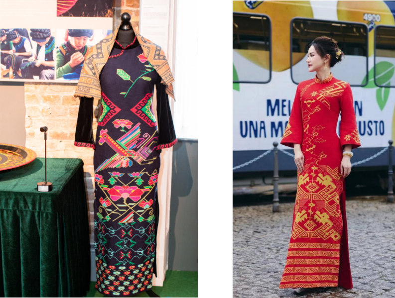
本项目致力于解决国家级非物质文化遗产——"土家织锦"在数字化保护中面临的数据极度稀缺与纹样特征提取难的痛点。针对传统卷积神经网络（CNN）在小样本、高复杂度纹理识别上的局限性，我设计并实现了一套基于迁移学习与改进EfficientNetV2的智能分类系统。
系统成功构建了首个高质量土家织锦纹样数据集，并通过算法创新，在仅千余张样本的情况下，实现了99.3%的分类准确率，为纺织非遗的数字化传承提供了高精度的AI技术底座。
现状：土家织锦实物拍摄困难，特定纹样（如珍稀动物纹）图像极少，直接训练极易导致模型过拟合。
创新策略：采用"离线增强 + 在线增强"的双重数据增广策略。
离线增强：针对样本极少的类别，进行旋转（90°/180°/270°）、翻转、高斯噪声添加及随机裁剪，从源头扩充数据规模。
在线增强：训练时实时进行色彩抖动（HSV调整）和随机仿射变换，模拟真实拍摄环境的光照与角度变化，显著提升模型鲁棒性。
现状：土家织锦纹样色彩对比强烈、几何结构复杂，普通CNN容易忽略关键纹理细节。
创新策略：改进骨干网络，引入CBAM注意力机制。将EfficientNetV2中的SE模块替换为CBAM模块，让模型同时关注"通道"和"空间"两个维度。
效果：模型更敏锐地捕捉织锦高饱和度色彩边界、几何纹理和图案关键区域，抑制复杂背景噪声。
现状：数据量小导致模型泛化能力差，且存在标注误差风险。
创新策略：引入标签平滑交叉熵损失函数 (Label Smoothing)。通过软化目标标签分布，防止模型对错误标签过度自信，显著提升模型在不平衡数据上的鲁棒性。
迁移学习策略：采用基于模型的迁移学习方法，先在大型公共数据集（Animals-25）上进行预训练，提取通用特征，再迁移到土家织锦数据集进行微调。
骨干网络：EfficientNetV2-S，平衡精度与效率。
创新模块：CBAM注意力模块，融合通道注意力与空间注意力。
损失函数：Label Smoothing Cross-Entropy。
微调策略：采用分层解冻策略，冻结底层网络，仅解冻深层网络和全连接层。
田野采集：深入湘西实地采集1000+张高清织锦图像。通过数据清洗与标注，筛选有效图像，构建包含动物、植物、几何、文字4大类共20子类的高质量数据集。
预处理：统一尺寸为512×512，进行归一化处理。
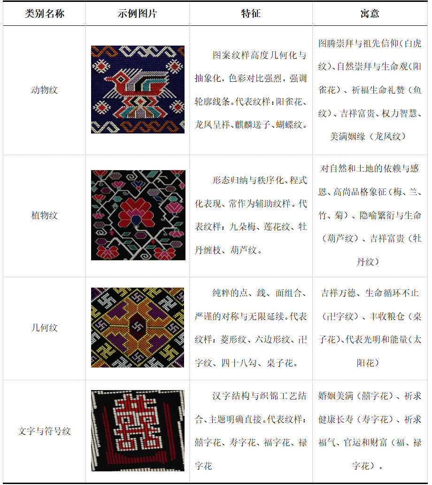
数据增强：在模型读取图像数据之前，主要通过两种策略实施数据增强，一是在输入模型之前对所有原始数据加以变换，从根本上扩大整个数据集的规模（离线增强）；二是采用动态批处理增强策略，在输入前实时进行增强操作（在线增强）。
在离线增强阶段，主要针对图像数量较少的动物纹样类别，依次采用以下方法对土家织锦图像数据集进行处理：水平与垂直翻转；图像旋转，按顺时针依次进行90、180、270度旋转；随机裁剪，分别取原图左上、左下、右上、右下四个部分进行随机像素的裁剪，并将裁剪后图像扩至512×512像素；添加高斯噪声，取原图左上、左下、右上、右下四个部分添加适量的高斯噪声，提升模型训练时的抗干扰能力。
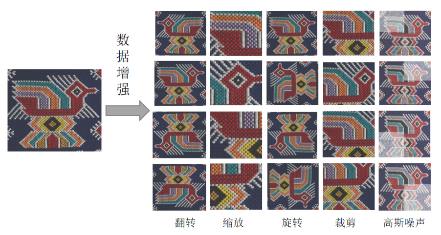
网络构建：基于PyTorch框架搭建EfficientNetV2网络。
模块替换：将MBConv模块中的SE模块替换为自定义CBAM模块。CBAM结合通道注意力模块（CAM）和空间注意力模块（SAM），分别对通道和空间进行建模，动态调整特征图中各部分的重要性。
CBAM机制显著提升对土家织锦高饱和度色彩边界、几何对称结构和纹理重复模式的响应能力，同时抑制背景噪声。
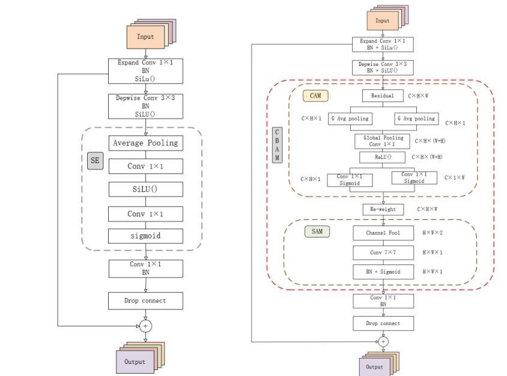
损失函数：为防止模型对训练标签过度自信，采用标签平滑交叉熵损失函数（Label Smoothing Cross-Entropy）。
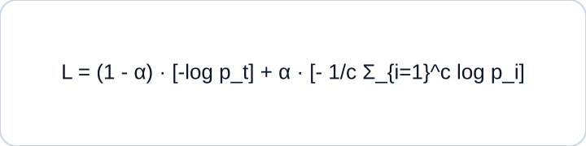
公式说明：通过引入标签平滑系数、真实类别预测概率与类别总数，使模型在相似几何纹样与抽象动物纹样间的判别更稳定、更合理。
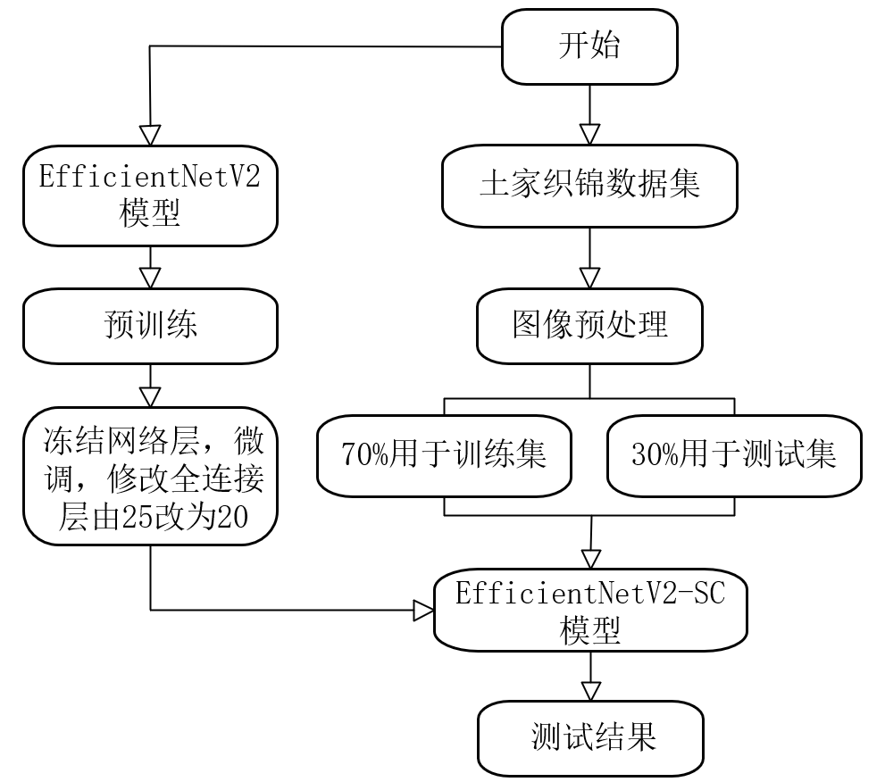
预训练：采用Animals-25公共数据集，包含5016张动物纹样，80%作为训练集，20%作为测试集。
训练配置：输入224×224，批次32，初始学习率0.001，AdamW优化器，权重衰减0.0001。若测试集准确率连续5个epoch不提升则减半学习率；并采用Early Stopping防止过拟合。
结果：改进EfficientNetV2预训练阶段准确率达97.6%。
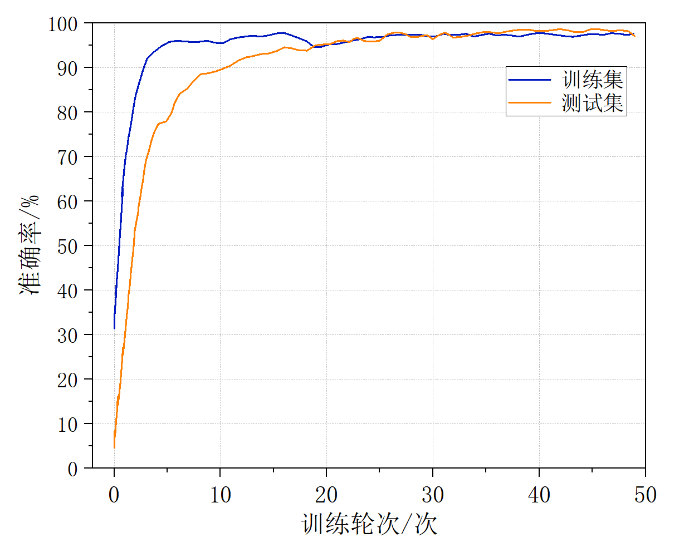
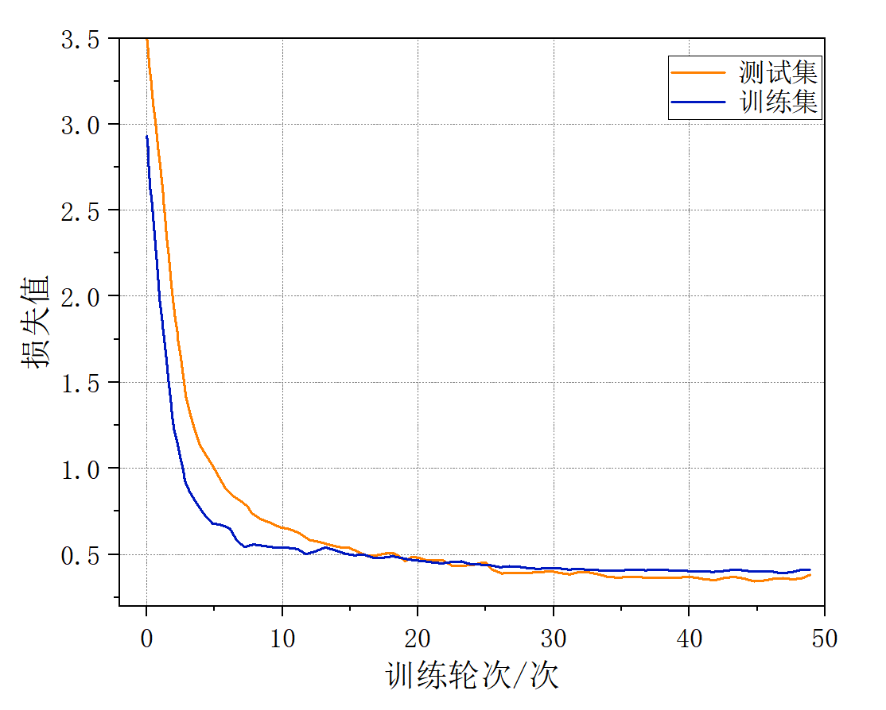
迁移微调：加载预训练权重，冻结底层参数，修改全连接层适配20类织锦纹样，在自建数据集上进行微调。
首先将改进模型预训练后，提取并加载其预训练权重参数作为初始参数，并根据土家织锦纹样分类任务的需求修改全连接层；然后冻结原模型浅层网络，即1-3阶段Fused-MBConv和4、5阶段MBConv的所有卷积层、池化层、批归一化层和所有CBAM注意力模块，保留预训练模型学习到的特征，同时利用在线的图像增强技术对织锦数据集进行扩增；最后释放模型剩余的深层网络和全连接层，同时加入新的Dropout层，抑制模型的过拟合现象。EfficientNetV2网络模型的微调流程如图所示。
对比VGG16、ResNet50、MobileNetV3、InceptionV4、YOLOv8、ViT-Base、Swin Transformer等模型，EfficientNetV2-SC实现了最高准确率与最佳综合性能。
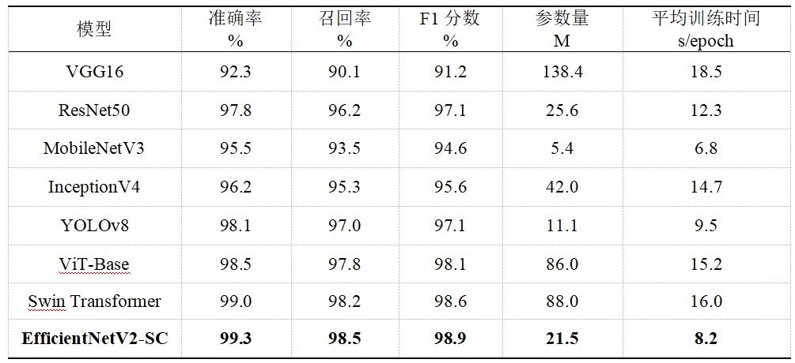
设置5种消融模型：S1去除标签平滑、S2去除CBAM、S3去除数据增强、S4冻结全部层仅解冻全连接层、S5采用逐层解冻策略。
实验a：比较损失函数与注意力机制，证明CBAM与标签平滑提升分类性能。
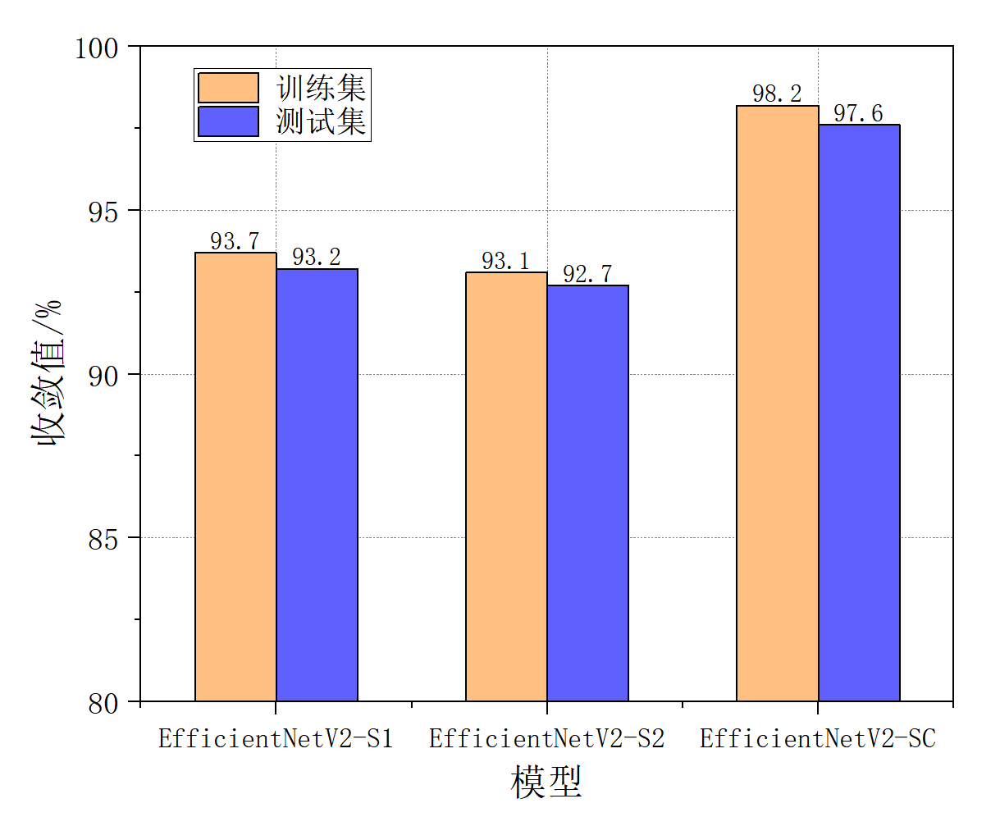
实验b：移除数据增强后，模型准确率下降至71.2%，出现明显过拟合。
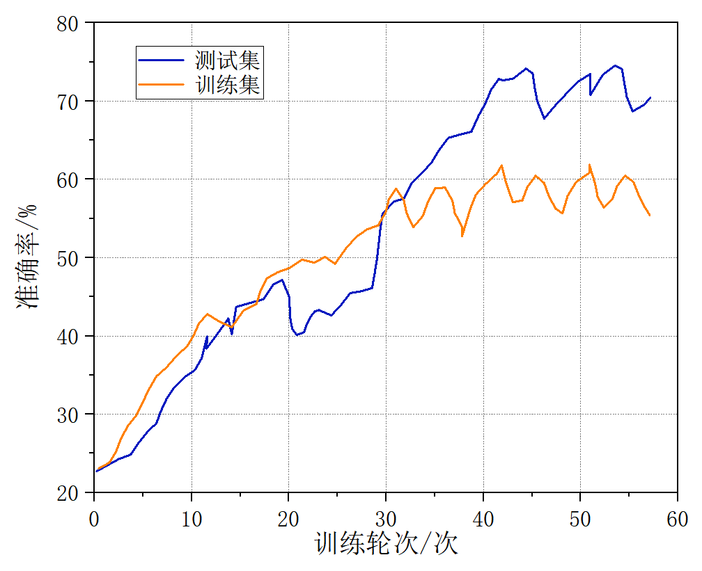
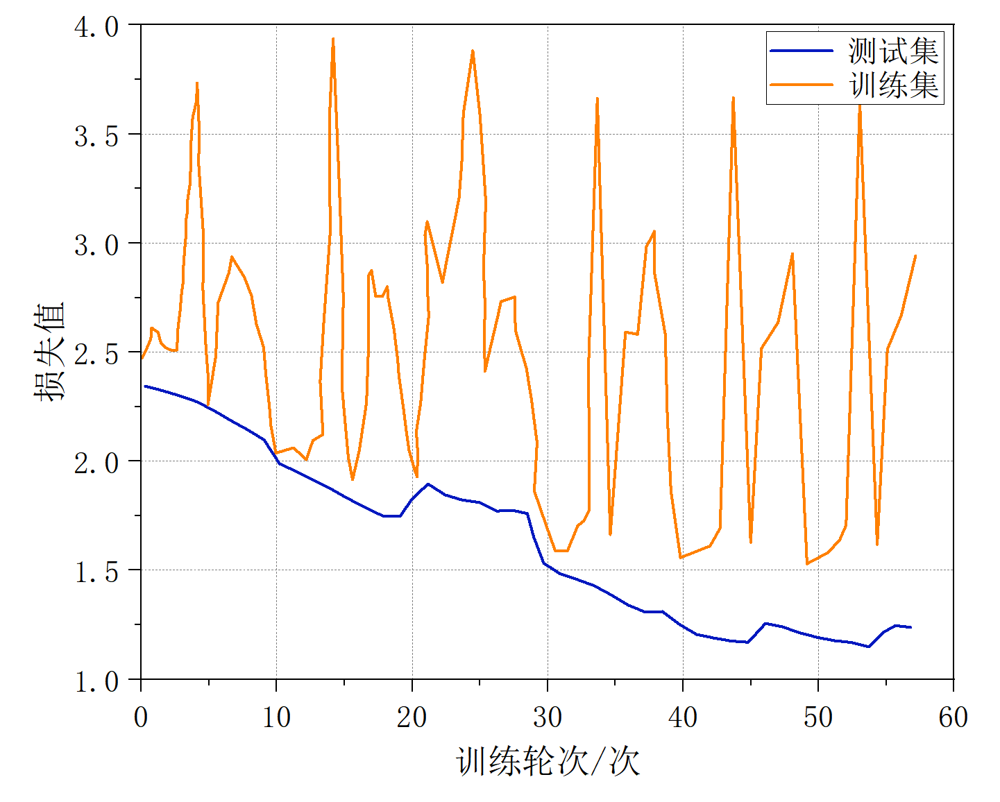
实验c：冻结与解冻策略比较。
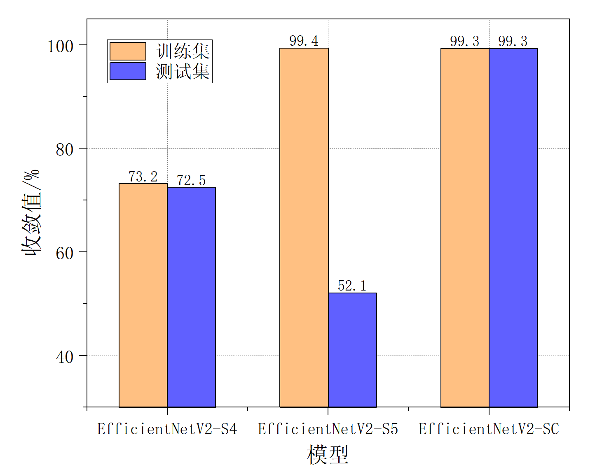
冻结与逐层解冻策略对准确率影响。
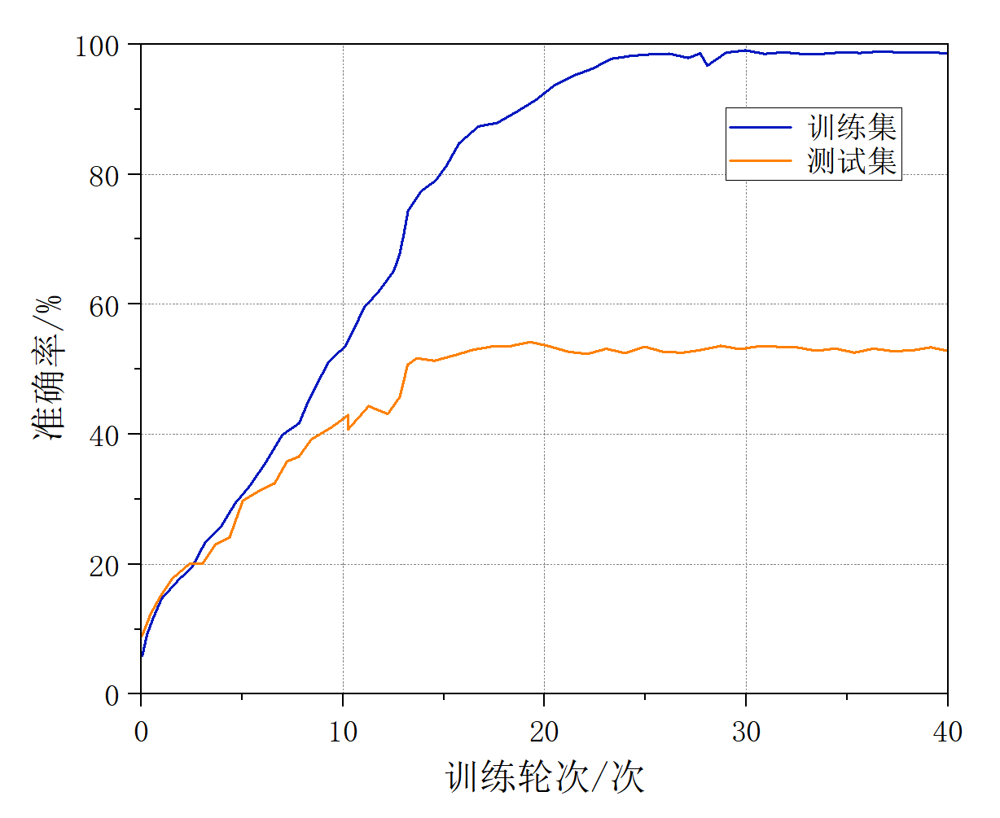
冻结与解冻策略对损失曲线的影响。
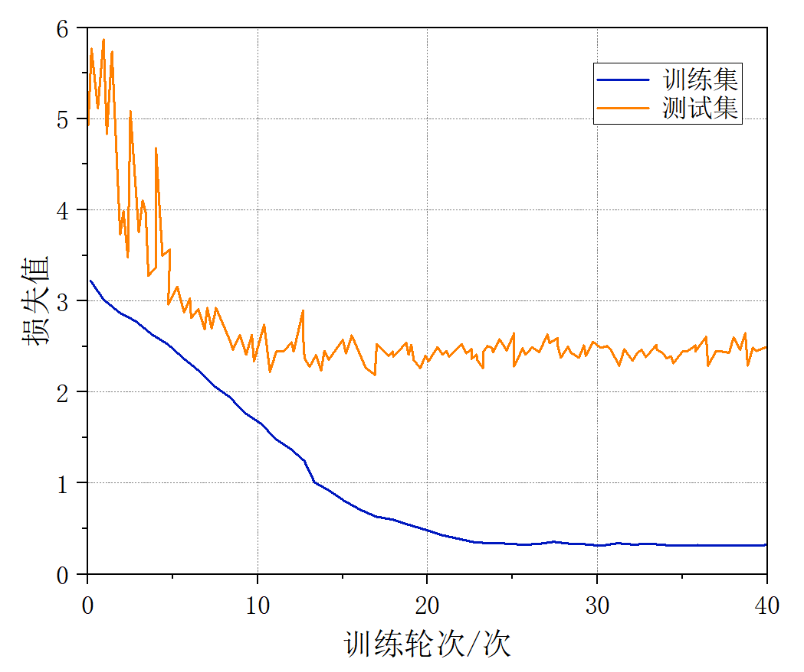
迁移过程中的训练/测试表现。